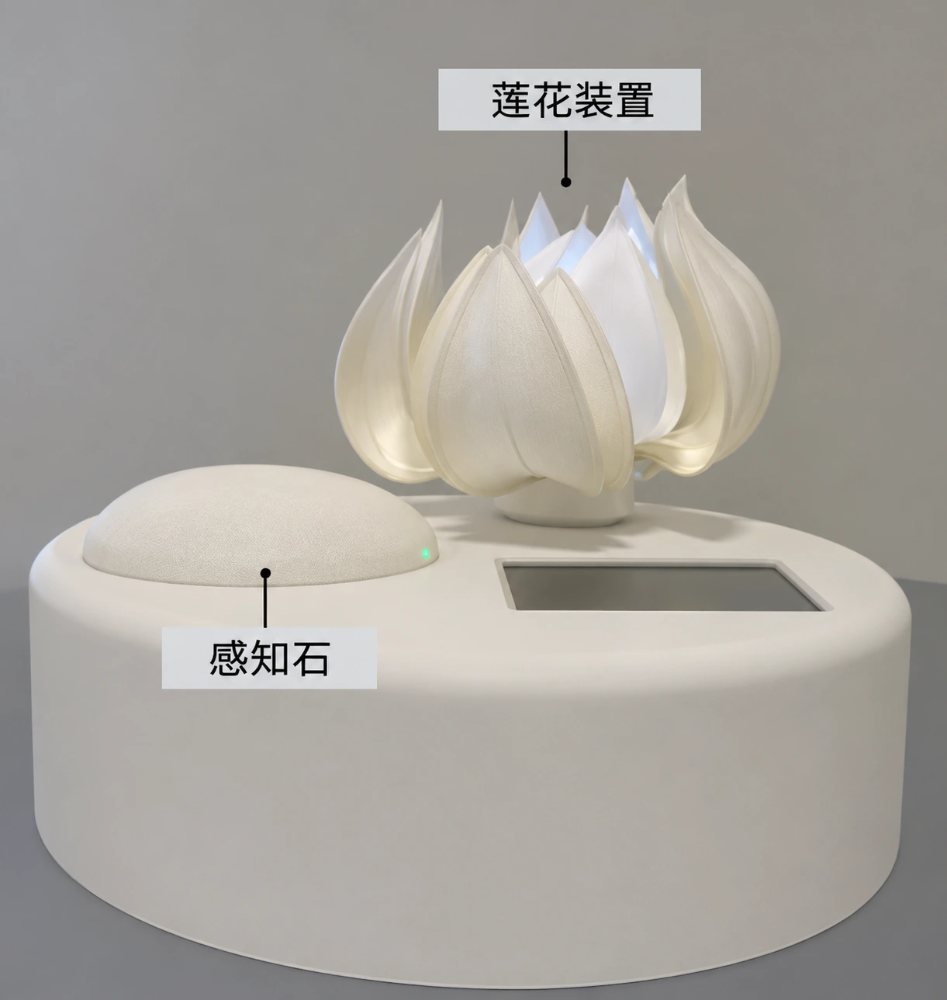
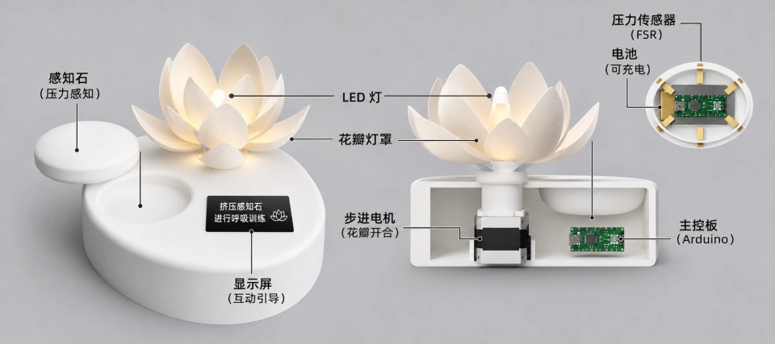
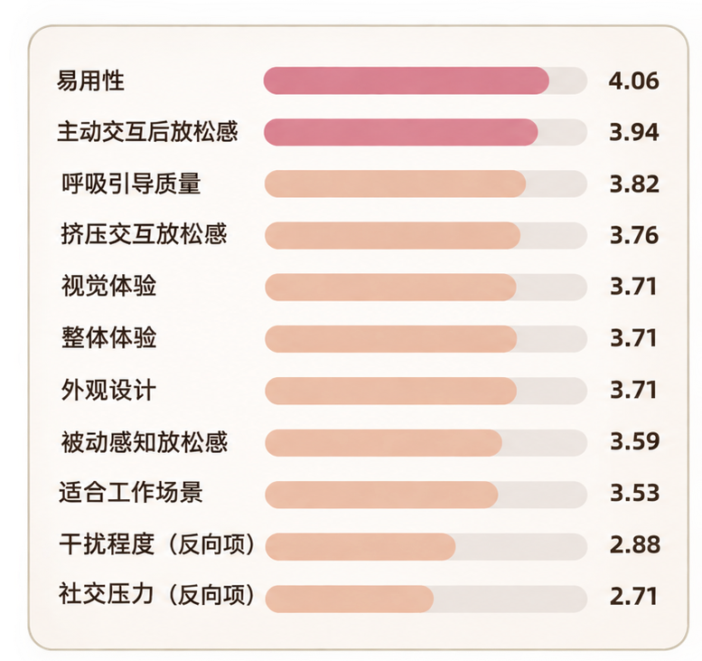

BLOOM
为工作间隙设计的具身情绪调节原型。握住感知石，跟随花瓣的开合呼吸。
项目类型：情绪体验 / 实体交互 / 多模态反馈 / 用户研究
个人贡献：独立完成用户研究、交互设计、软硬件原型开发、实地部署与原型评估
研究过程：访谈与参与式共创 → 原型设计与开发 → 实地部署与评估
项目背景与设计目标
办公人群需要在繁忙工作中调节情绪，但练习所需的时间、空间和注意力，以及在同事面前使用装置的顾虑，都可能影响实际参与。
BLOOM 探索如何利用身体动作与实体反馈，帮助用户在工作间隙进行情绪调节，并观察这类交互在真实办公环境中的使用体验与设计约束。
项目围绕三个目标展开。
- 降低开始练习的交互门槛，支持轻量参与与自主退出。
- 通过身体动作和多感官反馈，帮助用户关注身体感受。
- 将原型带入真实办公环境，了解个人偏好与社会情境如何影响使用。

用户研究与设计依据
前期研究通过专家访谈、办公人群访谈与参与式共创，探索挤压交互如何结合情绪调节练习，以及办公场景下的具体需求。
- 明确研究目标
- 访谈研究
- 参与式共创工作坊
- 定性分析与需求归纳
- 访谈 5 位情绪调节领域专家，了解调节方法及其适用条件。
- 访谈 16 位办公人群，识别工作情境中的情绪需求与使用障碍。
- 开展 5 场共创工作坊，邀请 17 位参与者通过情绪板、概念草图与故事版探索交互方案。

从研究发现到设计方向
| 研究发现 | 对应设计方向 |
|---|---|
| 工作繁忙，练习需要兼顾时间与注意负担 | 支持在工作间隙开始，提供简短提示与退出方式 |
| 挤压交互能提供可感知的身体参与 | 将挤压与释放结合呼吸节律 |
| 用户的调节意愿与感官偏好不同 | 以呼吸引导为主要练习，保留挤压的选择 |
| 公开使用可能影响用户对职业形象的感受 | 将共享休息空间作为部署起点，并在实地研究中观察社会影响 |
在此基础上，BLOOM 选择呼吸练习与肌肉收紧、放松相结合的方向，用莲花装置和感知石构建连贯的自然意象。
核心体验与交互机制
BLOOM 由莲花装置与感知石组成。用户通过拿起、挤压和释放感知石，与花瓣运动、灯光变化及屏幕提示形成互动。
将身体动作与呼吸节律同步
采用 4 秒吸气、6 秒呼气的节律。吸气时挤压感知石，花瓣向内收拢；呼气时释放，花瓣向外展开。灯光响应挤压力度，屏幕提供操作与呼吸提示。

| 交互阶段 | 用户行为 | 装置反馈 | 设计目的 |
|---|---|---|---|
| 开始交互 | 拿起感知石 | 检测拿起动作，切换交互状态，屏幕提供操作提示 | 帮助用户进入练习 |
| 吸气阶段：4 秒 | 挤压感知石 | 花瓣闭合，屏幕提示吸气与挤压；灯光响应挤压力度 | 引导肌肉收紧与吸气同步 |
| 呼气阶段：6 秒 | 释放挤压 | 花瓣张开，屏幕提示呼气与放松；灯光响应挤压力度 | 引导肌肉放松与呼气同步 |
| 主动退出 | 放回感知石 | 结束当前练习，恢复待机 | 保留用户对练习时长的控制权 |
提供不同程度的参与方式
用户可以跟随花瓣或灯光提示练习呼吸，也可以拿起感知石加入挤压动作。
拿起感知石后，系统进入交互准备状态，通过屏幕提示用户开始。练习过程中，用户可以随时将感知石放回，结束交互并恢复待机。
原型实现与场景适配
通过压力传感器采集挤压输入，BLE 连接感知石与花朵装置。步进电机驱动花瓣，LED 和屏幕提供反馈，光敏传感器检测感知石是否被拿起。

办公环境中的两种待机方案
第一版通过花瓣运动与灯光共同提示呼吸节律。考虑到共享空间中的机械声音与视觉干扰，第二版待机时保留灯光节律，减少机械运动。
两种方案分别部署到不同办公环境，探索反馈方式与使用场景之间的适配关系。
实地验证与关键发现
后续研究将 BLOOM 部署到 3 处办公环境，每处持续 10–15 个工作日，通过 17 份有效问卷、10 次半结构化访谈与主题分析，了解原型在真实环境中的使用体验。


使用体验
采用 5 点 Likert 量表，1 为非常不符合，5 为非常符合。
76.47% 的受访者认同主动交互后的放松效果，88.24% 对易用性给出正面评价。

身体参与帮助集中注意力
部分参与者认为，感知石的触感和挤压动作帮助他们更有意识地参与练习，将注意力转向身体。
“我做呼吸训练时很难集中注意力。但加入挤压动作后，我能立刻感知到它，因此更容易专注。”
——P10
放松也需要减少感官输入
参与者的感官偏好存在差异。熟悉练习后，一些用户希望减少视觉输入，把注意力留给呼吸与身体感受。
“后来我更喜欢闭上眼睛，不必每次都看屏幕，因为我已经知道接下来会发生什么。”
——P8
共享空间中的使用仍有社会压力
最初选择共享休息空间，是希望利用等待咖啡等碎片时间，让练习自然融入工作间隙。实际部署发现，即使在这些空间，部分用户仍担心使用行为暴露自己的情绪状态。
“如果同事每周都看到我使用它，我会担心他们想：‘她怎么又有压力了？’尤其我刚入职，我有点害怕被认为比较脆弱。”
——P2
这一发现促使后续设计进一步考虑私密、安静的使用空间，以及不同场景下的参与方式。
设计总结
具身交互对情感产生核心影响
实体产品的情绪价值不完全来自外观、动作表现或任何用户只能被动接受的行为，更取决于用户能否通过主动参与，与产品建立有意义的互动。
多模态反馈需要协同，而非简单叠加
动作、灯光、触觉及文字应围绕同一个交互目标协调设计，并考虑感官偏好、使用环境与文化背景。相同的设计，在不恰当的使用环境与文化背景下，可能带来不同的情绪体验。
尊重用户的情绪边界与控制权
情绪支持型产品需要允许用户决定何时开始、如何参与以及何时退出，避免过度干预和不必要的情绪暴露。
论文：Zhou, N., Devleminck, S., & Geurts, L. (2025). Squeeze Away the Worries: Exploring the Potential of Squeezable Interactions for Emotion Regulation for Desk Workers. ACM CHI. 论文链接
← 返回作品集